iEEGLAB step by step
From a recording downloaded from OpenNeuro to the CCEP results, through the EEGLAB menus: what to click, the window you should see, and the equivalent command line. Part A is stereo-EEG (MEF3 files), Part B is ECoG (BrainVision files).
1. Install
- (github.com/sccn/eeglab), then
from github.com/sccn/iEEGLAB
(Code > Download ZIP, or
git clone) intoeeglab/plugins/. The version in the extension manager is older: please use GitHub. - The readers for the raw files, from :
MEF3 for Part A, bva-io for Part B.
Mac with Apple Silicon: the MEF3 plugin ships Intel binaries only. Compile it on your Mac (Building from source) or copy MEX files you already compiled into the plugin folder. tells you when this is needed.
- Start EEGLAB. An menu appears. Run .
ExpectNo required item missing; the MEF3 reader (Part A) and
pop_loadbv(Part B) listed as found.
EEGLAB after start, with the iEEGLAB menu. Command line
eeglab ieeglab_check_install
2. Get the data
Each part uses one participant of a public dataset. You need the participant's folder; for Part A also the participant's brain surfaces. With the AWS command line (no account needed):
# Part A: sEEG, ds004696 sub-02 (about 1.9 GB)
aws s3 sync --no-sign-request s3://openneuro.org/ds004696 ds004696 --exclude "*" --include "sub-02/*" --include "derivatives/freesurfer/sub-02/*" --include "dataset_description.json" --include "participants.tsv"
# Part B: ECoG, ds004080 sub-ccepAgeUMCU02 (about 1 GB)
aws s3 sync --no-sign-request s3://openneuro.org/ds004080 ds004080 --exclude "*" --include "sub-ccepAgeUMCU02/*" --include "dataset_description.json" --include "participants.tsv"Or download the whole datasets from openneuro.org/datasets/ds004696 and openneuro.org/datasets/ds004080. Keep the folder structure as it is.
tutorial/seeg and
tutorial/ecog (EEGLAB .set files next to their sidecar files). Open one with
and continue at step 2 of either part; the numbers will differ
(see ieeglab_tutorial.m).3. Part A: sEEG (ds004696, sub-02)
- . Select the
ds004696folder (or itssub-02folder); if several recordings are found, choose the one of sub-02. In the next window, keep the channel typeSEEG(the scalp EEG and ECG channels are then not read) and, to read less, tick Read only these stimulation sites and select some.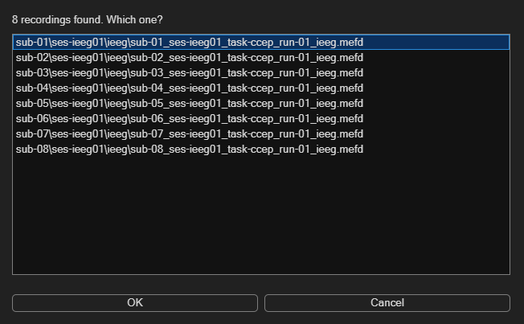
The recordings found in the dataset folder. 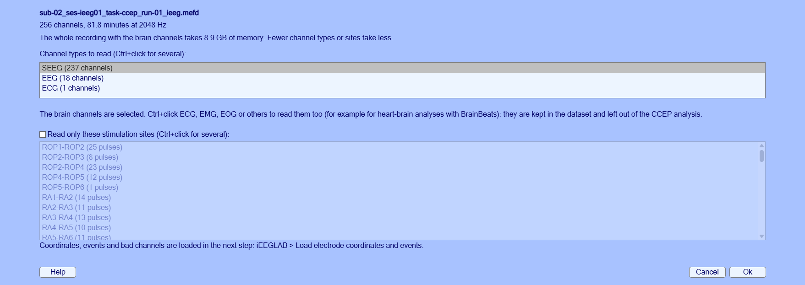
Channel types and stimulation sites to read. ExpectAbout 2 minutes for the whole recording: 237 channels, 2048 Hz, 82 minutes, 8.9 GB. Give the dataset a name when EEGLAB asks. Data: OpenNeuro ds004696, sub-02 (Ojeda Valencia et al., 2023, J Neurosci).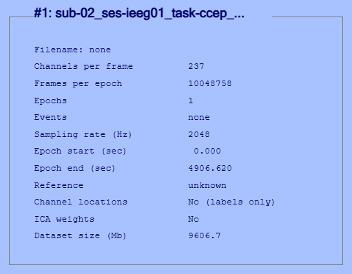
EEGLAB with the imported recording. Command line
rec = fullfile('ds004696', 'sub-02', 'ses-ieeg01', 'ieeg', 'sub-02_ses-ieeg01_task-ccep_run-01_ieeg.mefd'); EEG = ieeglab_import(rec); % the whole recording % EEG = ieeglab_import(rec, 'sites', {'RA2-RA3', 'RA3-RA4'}); % or only some stimulation sites - . The first window lists the electrodes, events
and channels files found for this recording: check them and press Ok. The second window lets you keep a subset of channels
or stimulation sites: keep everything.
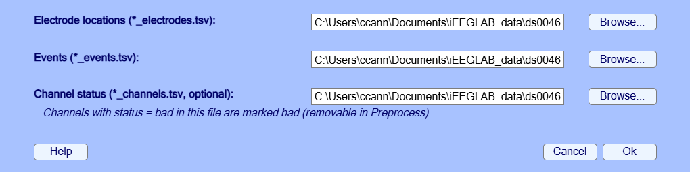
The sidecar files found for the recording. 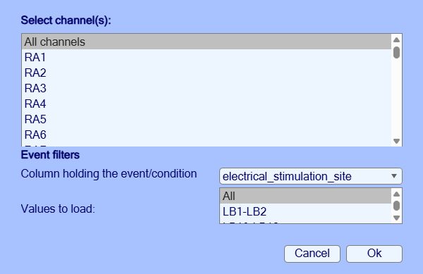
Channels and events to keep. ExpectA few seconds. 211 of the 237 contacts have coordinates; 39 contacts are marked bad (channels.tsv, and those without coordinates); 695 stimulation events typed by site (2 marked bad in the events file are dropped).Command line
EEG = ieeglab_load(EEG, struct('event_field', 'electrical_stimulation_site')); - . The command window explains what is needed: the participant's
pial surfaces, one file per hemisphere. They are found in
derivatives/freesurfer/sub-02and offered: press Use these. You are asked once; every other brain figure then uses the same surfaces ( changes them).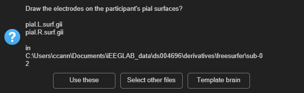
The surfaces found for the participant. ExpectA 3D brain with the 211 contacts inside the surface. Drag with the mouse to rotate.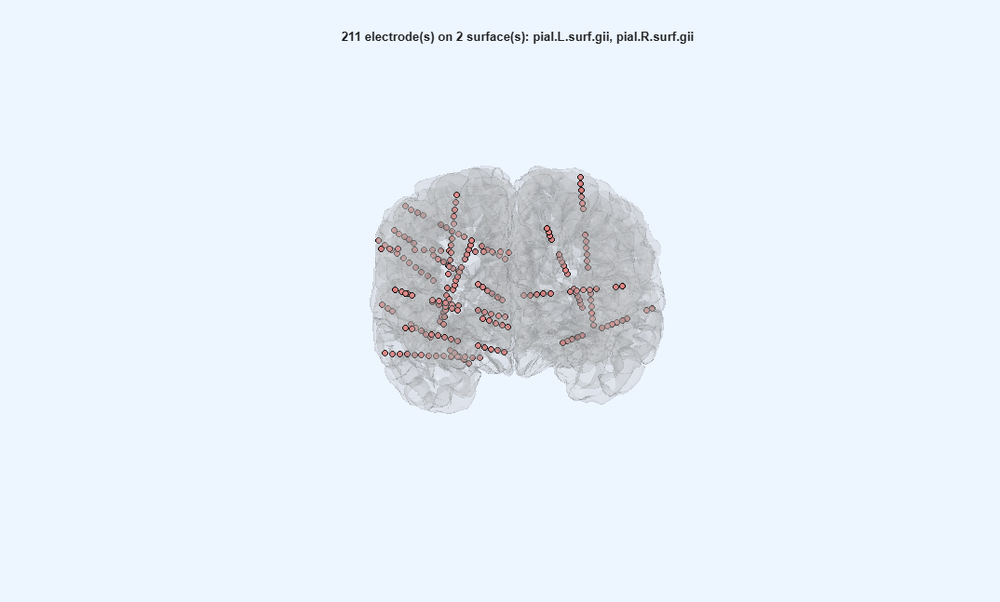
Contacts on the participant's pial surface. Command line
surf = fullfile('ds004696', 'derivatives', 'freesurfer', 'sub-02', {'pial.L.surf.gii', 'pial.R.surf.gii'}); EEG = ieeglab_vis_elec(EEG, struct('surf_files', {surf})); - . Blank stimulation artifact: on. High-pass: off (the default:
a high-pass filter can ring around the stimulation artifact). Notch:
60 120 180. Epoch:-1000 1000ms. Reject outlier trials: on. Remove bad channels: on. Baseline:-500 -50ms.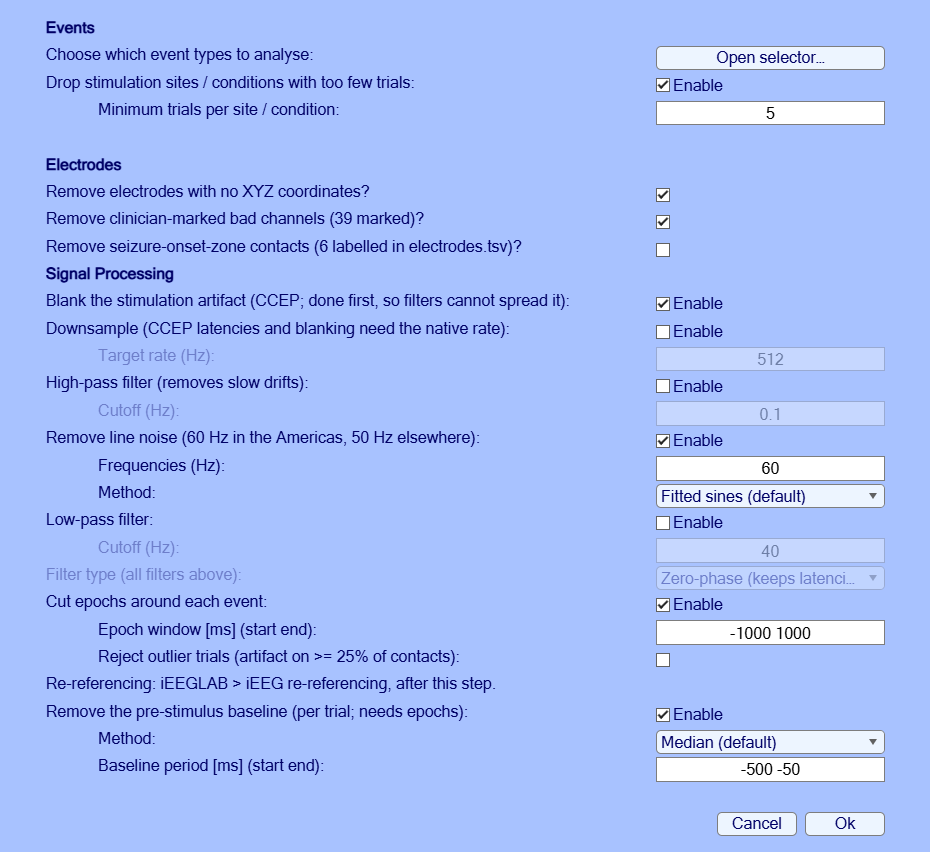
The preprocessing window with its defaults. ExpectAbout 9 minutes for the whole recording. The 39 bad contacts are removed (198 left), and the stimulations at a bad contact with them; 631 epochs. A warning from EEGLAB about the "single-trial ERP baseline" is harmless.Command line
EEG = ieeglab_preprocess(EEG, struct('apply_blank', true, ... 'apply_notch', true, 'notch', [60 120 180], ... 'apply_epoch', true, 'epoch_window', [-1000 1000], 'reject_trials', true, ... 'remove_bad_channels', true, 'apply_baseline', true, 'baseline_period', [-500 -50])); - . A quick look at the data at any step once
they are epoched: one row per channel, time across, the average of all epochs in colour (blue negative, red positive).
Each contact's own stimulation epochs are left out.
ExpectA band of activity starting at 0 ms on many channels, flat before it.
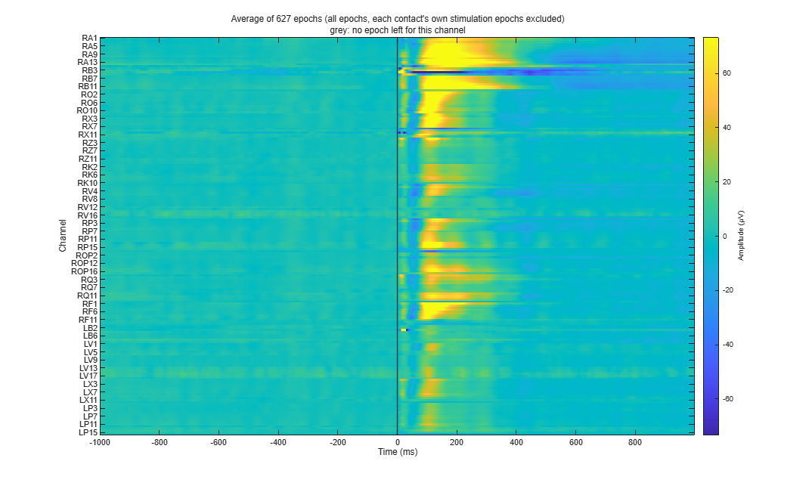
Average of all epochs, every channel. Command line
ieeglab_plot_heatmap(EEG); - . Method: CARLA; other fields as they are.
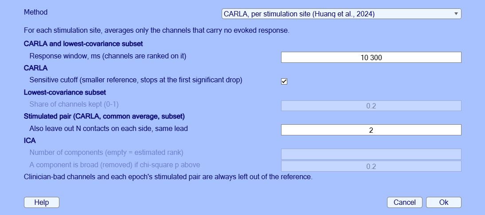
The re-referencing window. ExpectFor each site, the channels used as reference are printed. CARLA: Huang et al., 2024, J Neurosci Methods. For each stimulation site it picks the channels whose common average carries no evoked response; the stimulated pair is always left out.Command line
EEG = pop_ieeglab_reref(EEG, 'method', 'carla'); - . On sEEG, use CRP and build the connectivity
matrix from it.
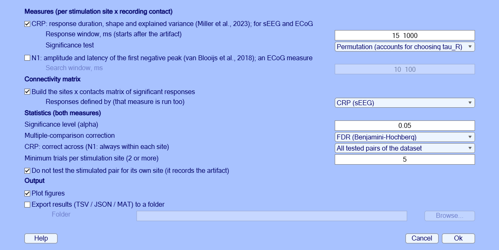
The CCEP analysis window. ExpectThe number of tested pairs that respond is printed. A summary figure: when the responses end (left) and how much of each trial the response shape explains, for significant and non-significant pairs (right). CRP, Canonical Response Parameterization: Miller et al., 2023, PLOS Comput Biol. Response duration, shape and explained variance per site and contact; significance by permutation test.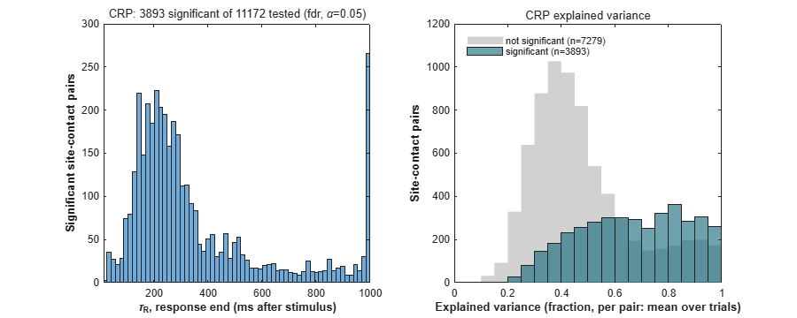
CRP summary. Command line
EEG = ieeglab_stats_subject(EEG, struct('run_n1', false, 'run_crp', true, ... 'run_matrix', true, 'matrix_source', 'crp')); - , and choose what to show. Rows are stimulation sites, columns
recording contacts. In the first view each cell says whether the pair responds: teal for a significant response, white
for tested without a response, grey for not tested (the stimulated contacts themselves, bad channels).

What the matrix can show. 
Significant responses. 
CRP explained variance of the significant pairs (0 to 1). Command line
pop_ieeglab_ccep_matrix(EEG, 'response'); pop_ieeglab_ccep_matrix(EEG, 'explained_var'); - : for example the in-degree, the number of stimulation
sites that evoke a response at each contact. The surfaces chosen in step 3 are used.

What to show on the contacts. 
In-degree per contact. Command line
pop_ieeglab_topoplot(EEG, 'in_degree'); - , to a folder of your choice.
ExpectTSV tables (channels, CRP), a JSON record of every option used, and a MAT file.
Command line
ieeglab_export(EEG, 'results_seeg');
4. Part B: ECoG (ds004080, sub-ccepAgeUMCU02)
- . Select the
ds004080folder and the recording ofsub-ccepAgeUMCU02; keep the channel typeECOG.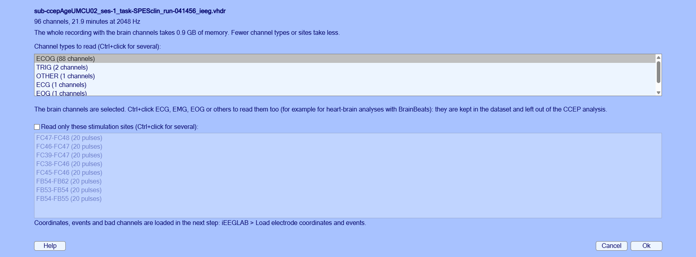
Channel types and stimulation sites to read. ExpectAbout 2 minutes. 88 of the 96 channels (the others are ECG, EMG, EOG and trigger channels), 2048 Hz, 22 minutes, 0.9 GB. Data: OpenNeuro ds004080, sub-ccepAgeUMCU02 (van Blooijs et al., 2023, Nat Neurosci).Command line
rec = fullfile('ds004080', 'sub-ccepAgeUMCU02', 'ses-1', 'ieeg', 'sub-ccepAgeUMCU02_ses-1_task-SPESclin_run-041456_ieeg.vhdr'); EEG = ieeglab_import(rec); - , as in Part A.
Expect88 contacts with coordinates, 2 marked bad in
channels.tsv; 160 stimulation events at 8 sites (each pair is stimulated in both polarities, 10 pulses each).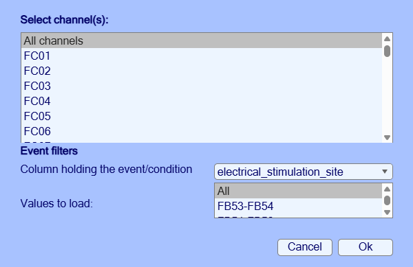
Channels and events to keep. Command line
EEG = ieeglab_load(EEG, struct('event_field', 'electrical_stimulation_site')); - . This dataset shares no individual MRI (coordinates are in
fsaverage space): choose Template brain.
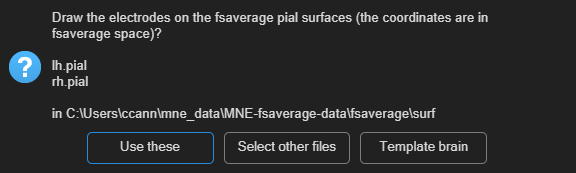
No surfaces for this participant. ExpectThe 88 grid and strip contacts on a transparent template brain.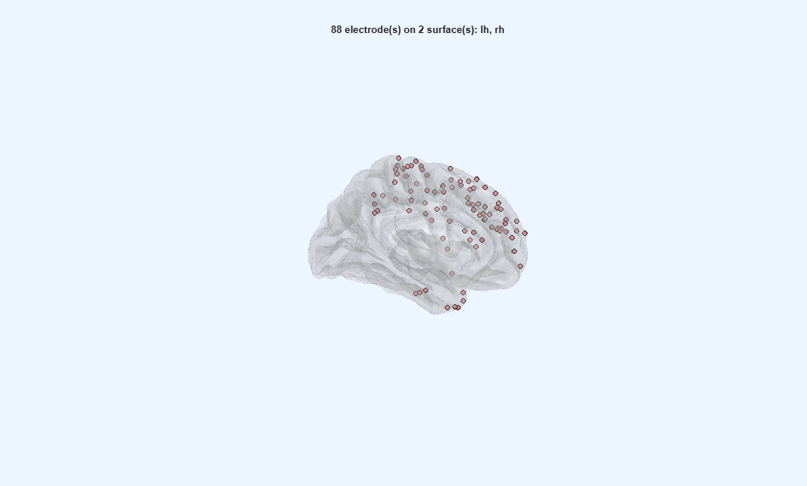
Contacts on the template brain. Command line
EEG = ieeglab_vis_elec(EEG, struct('surf_files', {{}})); - as in Part A, but notch
50 100 150(the dialog proposes the 50 Hz of this recording).ExpectAbout half a minute. 86 channels (the 2 bad ones removed), 160 epochs.Command line
EEG = ieeglab_preprocess(EEG, struct('apply_blank', true, ... 'apply_notch', true, 'notch', [50 100 150], ... 'apply_epoch', true, 'epoch_window', [-1000 1000], 'reject_trials', true, ... 'remove_bad_channels', true, 'apply_baseline', true, 'baseline_period', [-500 -50])); - .
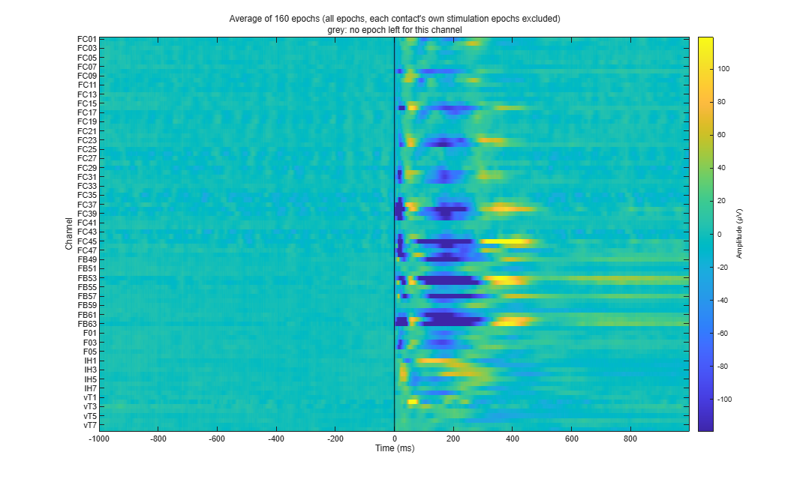
Average of all epochs, every channel. Command line
ieeglab_plot_heatmap(EEG); - : Common average.
ExpectA few seconds. For each site, every good channel except the stimulated pair.
Command line
EEG = pop_ieeglab_reref(EEG, 'method', 'car'); - : N1, and the matrix from N1.
ExpectAbout 15 s. "300 of 672 tested pairs respond"; N1 latencies 11 to 99 ms (median 47); the most connected site is FC45-FC46 (54 contacts). N1: van Blooijs et al., 2018, Hum Brain Mapp. iEEGLAB's default keeps the negative peak between 10 and 100 ms and tests it with a sign-flip permutation test across trials. The rule of erdetect (van Blooijs et al., 2023, Nat Neurosci), a negative peak 9-90 ms larger than 3.4 times the baseline SD taken as at least 50 uV, is an option of the same window. Open question: the permutation test finds erdetect's responses plus many smaller ones that are consistent across trials but below erdetect's amplitude criterion. Which should be the default on ECoG?
Command line
EEG = ieeglab_stats_subject(EEG, struct('run_n1', true, 'run_crp', false, ... 'run_matrix', true, 'matrix_source', 'n1')); - (responses, then N1 latency), and
(N1 amplitude for one stimulation site).
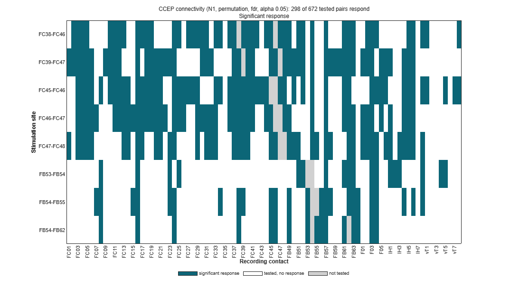
Significant responses: 8 sites by 86 contacts. 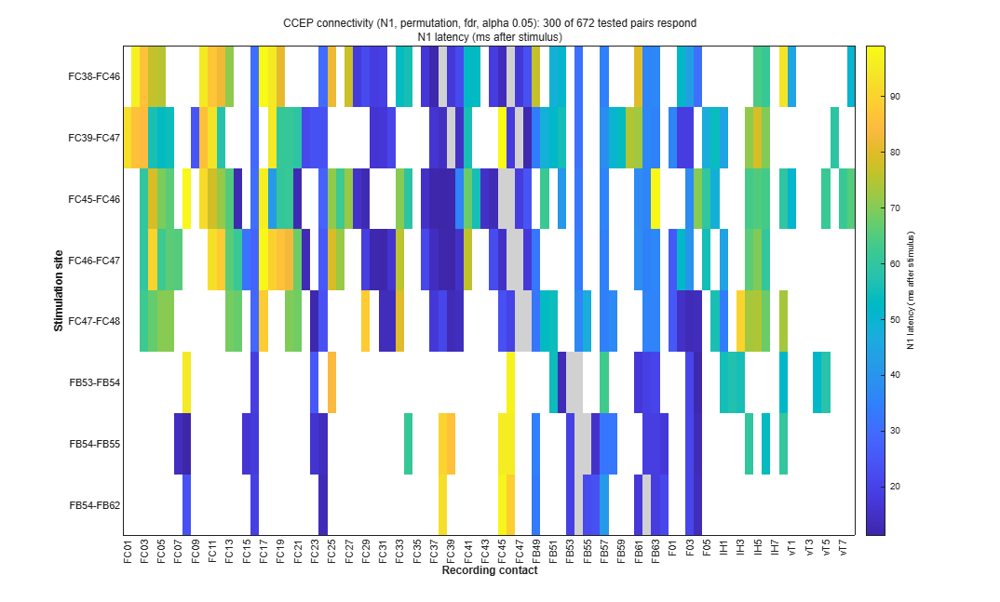
N1 latency of the significant pairs. 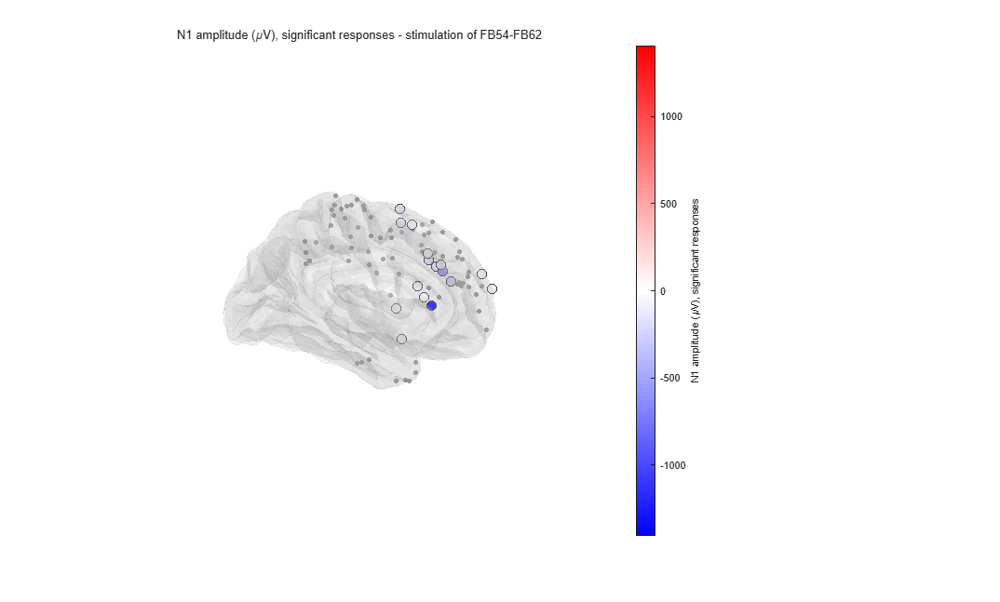
N1 amplitude after stimulation of FB54-FB62. Command line
pop_ieeglab_ccep_matrix(EEG, 'response'); pop_ieeglab_ccep_matrix(EEG, 'latency_ms'); pop_ieeglab_topoplot(EEG, 'n1_amplitude', 'site', 'FB54-FB62'); ieeglab_export(EEG, 'results_ecog');
5. What to report
- Any step whose result differs from the "Expect" box or the screenshot.
- Any error: a screenshot of the message and of the MATLAB command window.
- Anything unclear in a window (labels, defaults, order of steps).
- Your MATLAB and EEGLAB versions, and operating system.